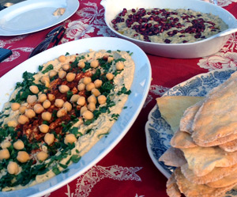

Humus
5,5 von 6500 g Kichererbsen am Vortag mit einem Tl Natron in viel Wasser einweichen. Abgiessen und mit frischem Wasser und nochmals einem halben TL Natron 2-3 Stunden auf kleinem Feuer garen bis die Erbsen gar sind. Das Kochwasser auffangen und die Erbsen abgiessen. Eine Hand voll Erbsen für die Dekoration beiseite legen. Mit 250 g Tahini (Sesampaste), 2 Knoblauchzehen, Saft einer Zitrone sowie etwas Olivenöl pürieren. Mit Salz und Peffer abschmecken, mit dem Kochwassser ergänzen bis die gewünschte Konsistenz entsteht (sollte relativ flüssig sein). Auf einer flachen Schale ausstreichen und mit Paprikapulver, etwas Olivenöl und den ganzen Kichererbsen garnieren. Mit Fladenbrot servieren.
